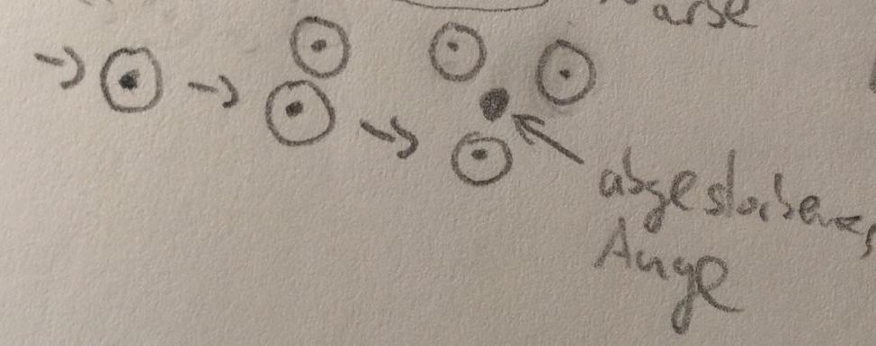

Quork
Quork

| Aussprache: | [ˈkvɒk] |
|---|---|
| Lebenserwartung: Durchschnittsgröße: Durchschnittsgewicht: |
253 Suruthua-Jahre (ca. 110 Erden-Jahre) 180-200cm 50kg |
| Religion: | Versiegeltes Schloss |
Inhaltsverzeichnis
Aussehen
- Flügel, libellenartig
- je nach Lebensphase unterschiedlich viele (0/2/4/6/8)
- wasserabweisend
- werden Flügel ganz nass können sie zunächst nicht fliegen
- 2 Flügel nach ca. einem Jahr → Wachstum hängt von der Stärke ab
- Augen je nach Lebensphase (1/2/3)
- bei Geburt ein Auge, aber noch zu (blind) 
- zwei Beine
- zwei Arme
- kein Kopf/Hals, Augen auf Armhöhe
- kein Geschmackssinn
- Beutel mit "Membran", der zur Nahrungsaufnahme und Kommunikation dient
Lebensweise
- schlechte Läufer, können auf zwei, laufen aber lieber auf vier Beinen
- vermeiden Laufen wo es geht
- leben in Kolonien
- können nicht schwimmen
- Lebensphasen: Kind, jugendlich, erwachsen, alt, (sehr alt)
Lebensraum/Herkunft
- hohe Wasserfälle/Klippen mit vielen Felsvorsprüngen und Höhlen
- Loromoth
Nahrung
- Felder
- Fische